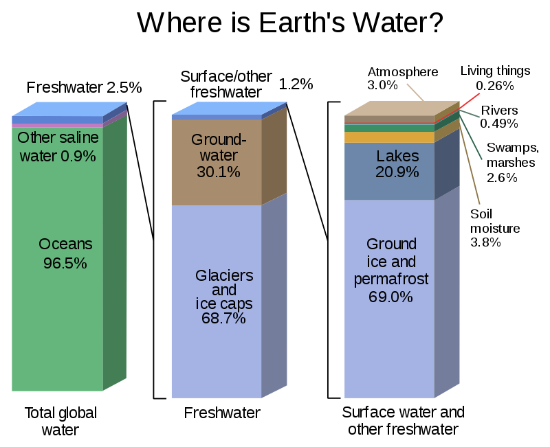
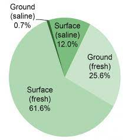
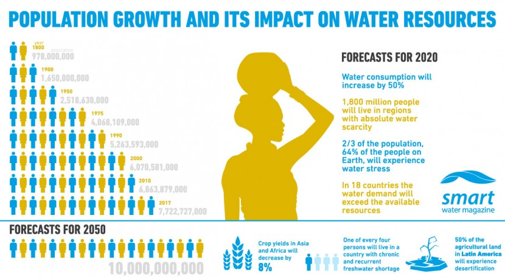

'What are Water Resources?'
 Water resources are natural resources of water that are potentially useful as a source of water supply. 97% of the water on the Earth is salt water and only three percent is fresh water; slightly over two thirds of this is frozen in glaciers and polar ice caps. The remaining unfrozen freshwater is found mainly as groundwater, with only a small fraction present above ground or in the air.
Natural sources of fresh water include surface water, under river flow, groundwater and frozen water. Artificial sources of fresh water can include treated wastewater (reclaimed water) and desalinated seawater.
Uses of water include agricultural, industrial, household, recreational and environmental activities. Water resources are under threat from water scarcity, water pollution, water conflict and climate change. Fresh water is a renewable resource, yet the world's supply of groundwater is steadily decreasing, with depletion occurring most prominently in Asia, South America and North America, although it is still unclear how much natural renewal balances this usage, and whether ecosystems are threatened. The framework for allocating water resources to water users (where such a framework exists) is known as water rights.
The following demographs demonstrates the availability of the Water Resources:
 
Sources Of Water
Natural Sources Of Water
- Surface Water : Surface water is water in a river, lake or fresh water wetland. Surface water is naturally replenished by precipitation and naturally lost through discharge to the oceans, evaporation, evapotranspiration and groundwater recharge.
- Under river flow : Throughout the course of a river, the total volume of water transported downstream will often be a combination of the visible free water flow together with a substantial contribution flowing through rocks and sediments that underlie the river and its floodplain called the hyporheic zone.
- Ground Water : Groundwater is fresh water located in the subsurface pore space of soil and rocks. It is also water that is flowing within aquifers below the water table. Sometimes it is useful to make a distinction between groundwater that is closely associated with surface water and deep groundwater in an aquifer (sometimes called "fossil water").
- Frozen Water : Several schemes have been proposed to make use of icebergs as a water source, however to date this has only been done for research purposes. Glacier runoff is considered to be surface water.
Artificial Sources Of Water
- Reclaimed water : Water reclamation (also called wastewater reuse) is the process of converting municipal wastewater (sewage) or industrial wastewater into water that can be reused for a variety of purposes. Types of reuse include: urban reuse, agricultural reuse (irrigation), environmental reuse, industrial reuse, planned potable reuse, de facto wastewater reuse (unplanned potable reuse).
- Desalination : Desalination is a process that takes away mineral components from saline water. More generally, desalination refers to the removal of salts and minerals from a target substance, as in soil desalination, which is an issue for agriculture. Saltwater (especially sea water) is desalinated to produce water suitable for human consumption or irrigation. The by-product of the desalination process is brine
 by Ananay Gupta © All Rights Reserved 2021
by Ananay Gupta © All Rights Reserved 2021